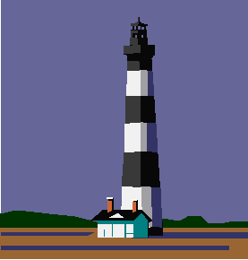

May, 1996:
On his spring break from
university, Jun borrowed my car and with his friend drove to LA, where the car
developed an engine problem and was towed to a dealer. When he called me a
long distance from the outskirt of the big city, I got an impression he was
going to wait till the work would be done. But judging from my automobile
industry experience, I knew the scale of engine overhaul would take much longer
than told by the staff at the shop. I told him to keep the car in dealer's
care and fly back. By then his friend had left home already. Luckly
he found a very economical flight from LA to Seattle. I drove there and
picked him up.
Initially I was planning to fly to LA and drove the car back once the work was completed in a week or so. Then days went by, I realized riding from Canada to LA was one of my dream trips for many years. One logestic problem had been one way bike transportation, because I didn't want to ride both ways. Now it was a golden opportunity to ride a bike from Burnaby, BC to fetch the car. The return transportation would be waiting for me at the destination. I talked to the service manager I would be there in a month.
It was my longest
continuous camping of 30 days and 3,000 km. I moved everyday, thanks
to the consistent weather, and never camped at the same location.
First I headed to Tsawwassen Ferry Terminal to get to Victoria. I can
remember 10 km out of home, over Alex Fraser Bridge to cross the mighty Fraser,
the enormous distance ahead of me. I spent the first night at MacDonald
Park, a few km's south of Swarlz Bay. Early in the next morning from
downtown Victoria, I caught a ferry to Port Angeles, Washington State, the other
side of Juan Fuca Strait.
By then, I had a route in my mind. That was I would stick to the coast as much as possible. So, to the west side of Olympic Peninsula. On the third day, I was planning to take a detour into Ho Rain Forest Park. The closure sign greeted me at the entrance. May was too early.
After several days of wilderness campings, I hit a first town along the Columbia river and had craving for Kentucky Fried chickens. Now, I know why. I was shedding my body fat by strenous exercises. I went in the first sight of the sign and ordered four pieces which quenched my hunger for greasy food. That was the last fried chicken for the whole year.
The bridge spanning the Columbia
was impressive with its arch, particularly so, from a cyclist's point of view
thinking of the height I have to gain by pure muscles.
On the other side of the bridge, I was in the State of Oregon; a sense of
accomplishment was felt within my heart. My expectation of good cycling on
the Oregon coast swell, too.
Eye catching secenery was those seastacks, jotting out of the sea with all sorts
of shapes and size. I past through rather famous tourist beaches like
Cannon Ball beaches without stopping. I stopped at a renowned youth hostel
at Seaside. When I was there, the day was young and after chatting with
proprietors I took the road.
Å@